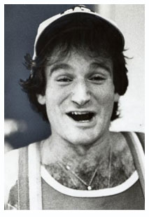
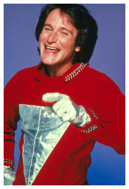

Where does genius come from? That is always the quintessential question when we ponder the passing of someone imbued with extraordinary abilities. Do the brightest stars in the sky necessarily burn out faster?
The planet-wide mourning over the passing of Robin Williams was proof of his genius. He touched the souls of all in the vast audiences for his stand-up comedy performances and television and movie acting triumphs. What issued forth from his mind and mouth was incredible, unbelievable, and, arguably, unprecedented.
Robin Williams was uniquely sensitive in his observations of the world. He was a walking encyclopedia, retaining huge quantities of information which he could instantly recall and reform into precise comic observations. What other actors try to perfect through disciplined practice and frequent failure he seemed to do intuitively and seamlessly.
In spite of, or perhaps because of his genius, Williams was vulnerable to the well-known perils of his chosen profession. Both comedic and dramatic actors working in the entertainment industry are susceptible to often debilitating emotional highs and lows. It goes with the trade. Actors must deal with unrelenting commercial demands, their own insatiable desire for recognition and critical approval and a frantic need to prove themselves worthy with every performance. The inevitable effects of periodic failure in a highly competitive profession are soul-crushing
Williams began his acting career with a bang. James Dunn, drama professor at College of Marin, was one of his first teachers. He recalled a production of Oliver, in which Williams was playing the role of Fagan. “We were having light board issues and by midnight had only made it through half the musical. At one point he started talking to a baton he was carrying, and the baton talked back. It cut the tension and he had people laughing in hysterics. I remember calling my wife at 2 a.m. and telling her that this young man was going to be something special," (Reported by Megan Hansen in Marin News 08/11/2014.)
Later at the Juilliard School, where Williams studied for a year on full scholarship, he wowed his teachers and his fellow student, Christopher Reeve, who said of him in his autobiography, “He was like an untied balloon that had been inflated and immediately released. To say that he was ‘on’ would be a major understatement.” Both Reeve and Williams were chosen to study with John Houseman in the advanced program. There is no record of the reaction of the classic, dramatic actor Houseman to Williams’ ad-lib comedic genius but it is rumoured that he said, after a year, that there was nothing more he could teach the young actor.
After working in comedy clubs in San Francisco and later in Los Angeles, Williams gained a massive audience with his performance as the alien Mork, first introduced in the TV series Happy Days and carried on in Mork & Mindy. It is said that Williams got this role by standing on his head at the audition. In the last season of Mork & Mindy he worked with his equally gifted idol, Jonathan Winters, who played the couple’s son Mearth. Scenes with Williams and Winters ad-libbing would be enshrined as classics in American comedy if they were not overshadowed by even more brilliant performances by both of them. Although Williams turned in an outstanding performance in his first movie, Popeye (1980) it was a commercial flop. Two years later, audiences were astonished by the depth of his dramatic acting in The World According to Garp (1982). His leading role in Good Morning, Vietnam (1987) proved his ability to balance drama with comedy which consisted of ad-lib, machine-gun style streams and comedic monologues crafted from an incredible repertoire of accents and impressions of famous people. Just as Williams could switch from frenetic babbling on, or bubbling forth, spot-on comedic lines, he could also miraculously bounce back and forth between comedy and dramatic acting. This explains his choice of roles and approach to his craft in films ranging from terror in One Hour Photo (2002), to warm and inspiring dramas like Good Will Hunting (1997), Awakenings (1990) and Dead Poets Society (1989) as well as brilliant comedies like The Birdcage (1996) and Flubber (1997).
With Robin Williams’ tragic passing, we are compelled to reflect not only on his genius as an actor but also on his character as he dealt with the incredible demands of his profession. Using the same dogged perseverance he drew on in creating his roles, he overcame drug and alcohol addiction. He also battled depression. This disease can afflict anyone at any time but for those who, like Williams are expected to be always ‘on’ it could have been the ultimate roadblock.
In spite of dealing with the all too common, debilitating side-effects of an acting career, Williams never showed any self-pity. He was the consummate star in giving back to the community, performing for the troops abroad and nurturing a younger generation of actors through scholarships.
The life and career of Robin Williams merits careful consideration by every young actor. It is packed with lessons that come in an absolutely delightful, multi-faceted and sparkling package.
The night sky is diminished with the absence of this star, but his life’s work will continue to illuminate and inspire future audiences when the lights dim and they watch his genius and dynamism unfold before them on the screen.